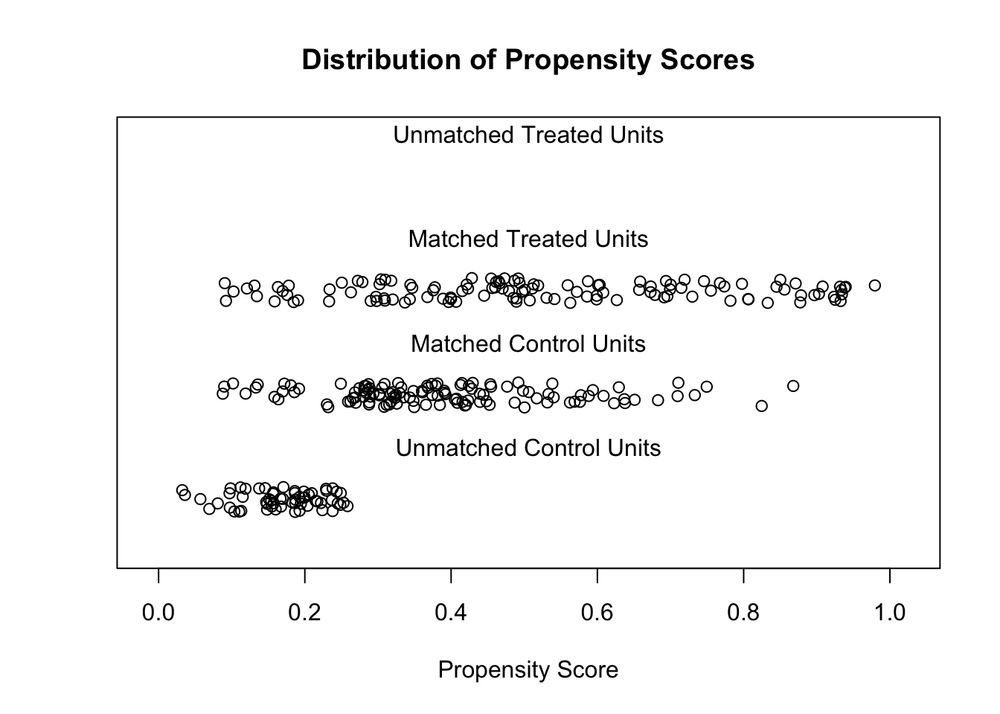
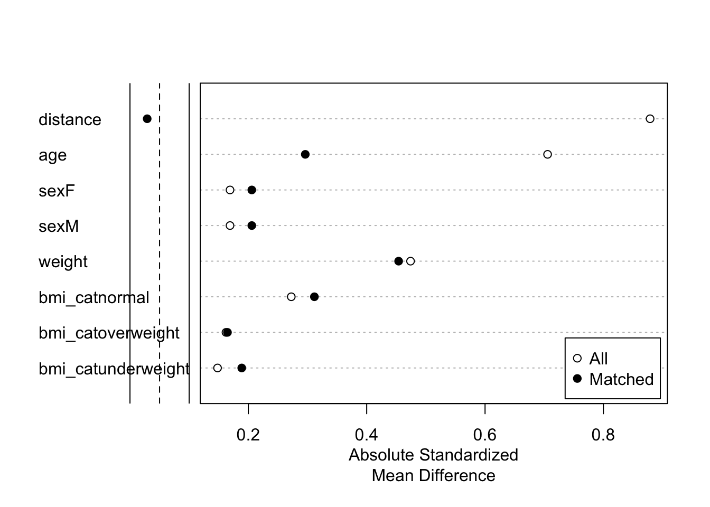

library(MatchIt)
library(dplyr)
library(optmatch)PS matching with R
About this article
This article provide a general and simple workflow of data analysis of propensity score matching using the MatchIt package.
The dataset used here can be found in the data folder, with name ps_data.csv. It is the same data included in the CAMIS article on Propensity score matching: SAS vs R, which provides some good information on the comparison between SAS and R. For more details and different options, please refer to the doc there.
This article is based on the vignette for the MatchIt package. For more implementation and methodology details, please refer to the vignette.
Propensity Score Matching with MatchIt
A matching analysis has a few steps:
- planning
- matching
- assess quality of matches
- estimate treatment effect and uncertainty
In the following example, we will go through a data analysis that covers these steps.
Example
We load the dataset ps_data. Also load the necessary packges: MatchIt and dplyr.
Inspect the dataset
# load data
data <- read.csv('../data/ps_data.csv')
glimpse(data)Rows: 300
Columns: 5
$ trtp <chr> "trt", "trt", "trt", "trt", "trt", "trt", "trt", "trt", "trt",…
$ sex <chr> "F", "F", "F", "F", "F", "F", "F", "F", "F", "F", "F", "F", "F…
$ age <int> 62, 60, 63, 98, 29, 41, 67, 53, 64, 62, 36, 63, 71, 102, 57, 4…
$ weight <dbl> 64.4, 67.1, 69.0, 69.0, 64.1, 62.9, 66.6, 62.1, 65.0, 74.0, 54…
$ bmi_cat <chr> "underweight", "underweight", "underweight", "underweight", "u…Do a bit of data processing: some character variables need to be factors.
# maybe need to set factors
vars <- c('trtp', 'sex', 'bmi_cat')
data[vars] <- lapply(data[vars], factor)Check initial imbalance
We need to assess the balance in the treatment variable.
table(data$trtp)
control trt
180 120 The pre-matching imbalance can also be assessed in the following way.
m0 <- matchit(
trtp ~ age + sex + weight + bmi_cat,
data = data,
method = NULL,
distance = "glm"
)
summary(m0)- 1
- No matching is performed
- 2
-
glmfor generalized linear model - logistic regression
Call:
matchit(formula = trtp ~ age + sex + weight + bmi_cat, data = data,
method = NULL, distance = "glm")
Summary of Balance for All Data:
Means Treated Means Control Std. Mean Diff. Var. Ratio
distance 0.5269 0.3154 0.8805 2.0576
age 61.4833 49.4000 0.7057 2.6343
sexF 0.5833 0.5000 0.1690 .
sexM 0.4167 0.5000 -0.1690 .
weight 67.2992 63.8250 0.4741 0.5779
bmi_catnormal 0.4750 0.3389 0.2726 .
bmi_catoverweight 0.2417 0.3111 -0.1622 .
bmi_catunderweight 0.2833 0.3500 -0.1479 .
eCDF Mean eCDF Max
distance 0.2593 0.4500
age 0.1635 0.3722
sexF 0.0833 0.0833
sexM 0.0833 0.0833
weight 0.1241 0.2639
bmi_catnormal 0.1361 0.1361
bmi_catoverweight 0.0694 0.0694
bmi_catunderweight 0.0667 0.0667
Sample Sizes:
Control Treated
All 180 120
Matched 180 120
Unmatched 0 0
Discarded 0 0When checking the results, standardized mean difference, variance ratios, eCDF are important measures. SMD and eCDF should be close to zero, while variance ratios should be close to 1.
Nearest neighbor matching
The first matching method we use is the 1:1 nearest neighbor (NN).
m1 <- matchit(
trtp ~ age + sex + weight + bmi_cat,
data = data,
method = "nearest", # set method NN
distance = "glm"
)
m1A `matchit` object
- method: 1:1 nearest neighbor matching without replacement
- distance: Propensity score
- estimated with logistic regression
- number of obs.: 300 (original), 240 (matched)
- target estimand: ATT
- covariates: age, sex, weight, bmi_catCheck the quality of the matches.
summary(m1)
Call:
matchit(formula = trtp ~ age + sex + weight + bmi_cat, data = data,
method = "nearest", distance = "glm")
Summary of Balance for All Data:
Means Treated Means Control Std. Mean Diff. Var. Ratio
distance 0.5269 0.3154 0.8805 2.0576
age 61.4833 49.4000 0.7057 2.6343
sexF 0.5833 0.5000 0.1690 .
sexM 0.4167 0.5000 -0.1690 .
weight 67.2992 63.8250 0.4741 0.5779
bmi_catnormal 0.4750 0.3389 0.2726 .
bmi_catoverweight 0.2417 0.3111 -0.1622 .
bmi_catunderweight 0.2833 0.3500 -0.1479 .
eCDF Mean eCDF Max
distance 0.2593 0.4500
age 0.1635 0.3722
sexF 0.0833 0.0833
sexM 0.0833 0.0833
weight 0.1241 0.2639
bmi_catnormal 0.1361 0.1361
bmi_catoverweight 0.0694 0.0694
bmi_catunderweight 0.0667 0.0667
Summary of Balance for Matched Data:
Means Treated Means Control Std. Mean Diff. Var. Ratio
distance 0.5269 0.3882 0.5774 2.3477
age 61.4833 52.7833 0.5081 3.1020
sexF 0.5833 0.5333 0.1014 .
sexM 0.4167 0.4667 -0.1014 .
weight 67.2992 66.3850 0.1247 0.6031
bmi_catnormal 0.4750 0.3917 0.1669 .
bmi_catoverweight 0.2417 0.3083 -0.1557 .
bmi_catunderweight 0.2833 0.3000 -0.0370 .
eCDF Mean eCDF Max Std. Pair Dist.
distance 0.1412 0.3667 0.5780
age 0.1208 0.2833 0.7066
sexF 0.0500 0.0500 1.0480
sexM 0.0500 0.0500 1.0480
weight 0.0653 0.1333 1.2639
bmi_catnormal 0.0833 0.0833 0.9345
bmi_catoverweight 0.0667 0.0667 0.9733
bmi_catunderweight 0.0167 0.0167 0.7767
Sample Sizes:
Control Treated
All 180 120
Matched 120 120
Unmatched 60 0
Discarded 0 0m1$weights # membership, 1 or 0 1 2 3 4 5 6 7 8 9 10 11 12 13 14 15 16 17 18 19 20
1 1 1 1 1 1 1 1 1 1 1 1 1 1 1 1 1 1 1 1
21 22 23 24 25 26 27 28 29 30 31 32 33 34 35 36 37 38 39 40
1 1 1 1 1 1 1 1 1 1 1 1 1 1 1 1 1 1 1 1
41 42 43 44 45 46 47 48 49 50 51 52 53 54 55 56 57 58 59 60
1 1 1 1 1 1 1 1 1 1 1 1 1 1 1 1 1 1 1 1
61 62 63 64 65 66 67 68 69 70 71 72 73 74 75 76 77 78 79 80
1 1 1 1 1 1 1 1 1 1 1 1 1 1 1 1 1 1 1 1
81 82 83 84 85 86 87 88 89 90 91 92 93 94 95 96 97 98 99 100
1 1 1 1 1 1 1 1 1 1 1 1 1 1 1 1 1 1 1 1
101 102 103 104 105 106 107 108 109 110 111 112 113 114 115 116 117 118 119 120
1 1 1 1 1 1 1 1 1 1 1 1 1 1 1 1 1 1 1 1
121 122 123 124 125 126 127 128 129 130 131 132 133 134 135 136 137 138 139 140
1 1 0 1 1 0 0 1 1 0 0 0 0 0 0 0 1 1 0 1
141 142 143 144 145 146 147 148 149 150 151 152 153 154 155 156 157 158 159 160
0 0 1 1 1 0 1 0 1 1 1 0 0 1 1 1 1 1 0 1
161 162 163 164 165 166 167 168 169 170 171 172 173 174 175 176 177 178 179 180
1 1 1 1 1 1 1 1 1 1 1 1 1 1 1 1 0 1 1 1
181 182 183 184 185 186 187 188 189 190 191 192 193 194 195 196 197 198 199 200
1 1 0 0 1 1 0 1 1 1 1 1 1 1 1 1 1 1 0 1
201 202 203 204 205 206 207 208 209 210 211 212 213 214 215 216 217 218 219 220
1 1 1 0 0 0 1 1 1 1 0 0 0 0 1 1 0 1 0 1
221 222 223 224 225 226 227 228 229 230 231 232 233 234 235 236 237 238 239 240
1 1 1 1 0 1 1 1 1 0 0 1 0 1 1 0 1 1 1 1
241 242 243 244 245 246 247 248 249 250 251 252 253 254 255 256 257 258 259 260
1 0 1 0 1 1 0 1 0 1 1 1 1 1 1 0 1 1 1 1
261 262 263 264 265 266 267 268 269 270 271 272 273 274 275 276 277 278 279 280
0 0 1 0 1 1 1 0 0 1 0 1 1 1 1 1 1 0 1 1
281 282 283 284 285 286 287 288 289 290 291 292 293 294 295 296 297 298 299 300
1 0 1 1 1 0 0 0 1 1 0 0 0 1 0 1 1 0 0 0 m1$weights |> table() # 244 unmatched, 370 (185:185 tr ct)
0 1
60 240 Can also visualize the PS after matching.
plot(m1, type = "jitter", interactive = FALSE)
Full matching
A different method can be used (full matching).
m2 <- matchit(
trtp ~ age + sex + weight + bmi_cat,
data = data,
method = "full",
distance = "glm",
link = "probit"
)
summary(m2)
Call:
matchit(formula = trtp ~ age + sex + weight + bmi_cat, data = data,
method = "full", distance = "glm", link = "probit")
Summary of Balance for All Data:
Means Treated Means Control Std. Mean Diff. Var. Ratio
distance 0.5276 0.3179 0.8789 2.0294
age 61.4833 49.4000 0.7057 2.6343
sexF 0.5833 0.5000 0.1690 .
sexM 0.4167 0.5000 -0.1690 .
weight 67.2992 63.8250 0.4741 0.5779
bmi_catnormal 0.4750 0.3389 0.2726 .
bmi_catoverweight 0.2417 0.3111 -0.1622 .
bmi_catunderweight 0.2833 0.3500 -0.1479 .
eCDF Mean eCDF Max
distance 0.2574 0.4417
age 0.1635 0.3722
sexF 0.0833 0.0833
sexM 0.0833 0.0833
weight 0.1241 0.2639
bmi_catnormal 0.1361 0.1361
bmi_catoverweight 0.0694 0.0694
bmi_catunderweight 0.0667 0.0667
Summary of Balance for Matched Data:
Means Treated Means Control Std. Mean Diff. Var. Ratio
distance 0.5276 0.5207 0.0291 1.0618
age 61.4833 56.4109 0.2962 2.2516
sexF 0.5833 0.6848 -0.2058 .
sexM 0.4167 0.3152 0.2058 .
weight 67.2992 70.6259 -0.4540 0.4518
bmi_catnormal 0.4750 0.6306 -0.3116 .
bmi_catoverweight 0.2417 0.1712 0.1647 .
bmi_catunderweight 0.2833 0.1982 0.1889 .
eCDF Mean eCDF Max Std. Pair Dist.
distance 0.0084 0.1167 0.0363
age 0.0729 0.2028 0.5135
sexF 0.1015 0.1015 0.9918
sexM 0.1015 0.1015 0.9918
weight 0.0805 0.2732 1.2674
bmi_catnormal 0.1556 0.1556 0.8822
bmi_catoverweight 0.0705 0.0705 0.8232
bmi_catunderweight 0.0851 0.0851 0.9385
Sample Sizes:
Control Treated
All 180. 120
Matched (ESS) 29.88 120
Matched 180. 120
Unmatched 0. 0
Discarded 0. 0Assess the balance with Love plot. Read more in vignette('assessing-balance').
plot(summary(m2))
Estimate treatment effect
First match the data. We focus on the full matching. Some new columns are added.
m.data <- match_data(m2)
head(m.data) trtp sex age weight bmi_cat distance weights subclass
1 trt F 62 64.4 underweight 0.49077924 1 1
2 trt F 60 67.1 underweight 0.48967733 1 1
3 trt F 63 69.0 underweight 0.55924944 1 29
4 trt F 98 69.0 underweight 0.93988057 1 35
5 trt F 29 64.1 underweight 0.08752362 1 39
6 trt F 41 62.9 underweight 0.18167583 1 45Fit model with weights
fit <- lm(
weight ~ trtp + age + sex + bmi_cat,
data = m.data,
weights = weights
)
summary(fit)- 1
- use the matched data
- 2
-
add weights. this is a column in
m.data
Call:
lm(formula = weight ~ trtp + age + sex + bmi_cat, data = m.data,
weights = weights)
Weighted Residuals:
Min 1Q Median 3Q Max
-38.881 -5.868 -1.966 1.987 52.368
Coefficients:
Estimate Std. Error t value Pr(>|t|)
(Intercept) 71.88164 2.47256 29.072 < 2e-16 ***
trtptrt -2.59401 1.13479 -2.286 0.022972 *
age 0.01184 0.03942 0.300 0.764090
sexM -0.50322 1.13855 -0.442 0.658824
bmi_catoverweight -5.40009 1.42960 -3.777 0.000192 ***
bmi_catunderweight -4.24149 1.34187 -3.161 0.001737 **
---
Signif. codes: 0 '***' 0.001 '**' 0.01 '*' 0.05 '.' 0.1 ' ' 1
Residual standard error: 9.272 on 294 degrees of freedom
Multiple R-squared: 0.09304, Adjusted R-squared: 0.07761
F-statistic: 6.032 on 5 and 294 DF, p-value: 2.476e-05In the end, you can also compare it with the model without matching (lm).
fit0 <- lm(
weight ~ trtp + age + sex + bmi_cat,
data = data
)
summary(fit0)
Call:
lm(formula = weight ~ trtp + age + sex + bmi_cat, data = data)
Residuals:
Min 1Q Median 3Q Max
-27.902 -5.725 0.356 5.487 23.530
Coefficients:
Estimate Std. Error t value Pr(>|t|)
(Intercept) 66.86591 2.16059 30.948 <2e-16 ***
trtptrt 3.55584 1.14027 3.118 0.0020 **
age -0.03191 0.03753 -0.850 0.3959
sexM 0.05071 1.02071 0.050 0.9604
bmi_catoverweight -2.39144 1.25778 -1.901 0.0582 .
bmi_catunderweight -2.13108 1.21236 -1.758 0.0798 .
---
Signif. codes: 0 '***' 0.001 '**' 0.01 '*' 0.05 '.' 0.1 ' ' 1
Residual standard error: 8.771 on 294 degrees of freedom
Multiple R-squared: 0.05354, Adjusted R-squared: 0.03744
F-statistic: 3.326 on 5 and 294 DF, p-value: 0.006142Interpreting the result is a different topic, which is not covered in this article.
Summary
There are many diffrent methods implemented in the MatchIt package that we have not elaborated in this article. Please read the MatchIt vignette for more details on the options.